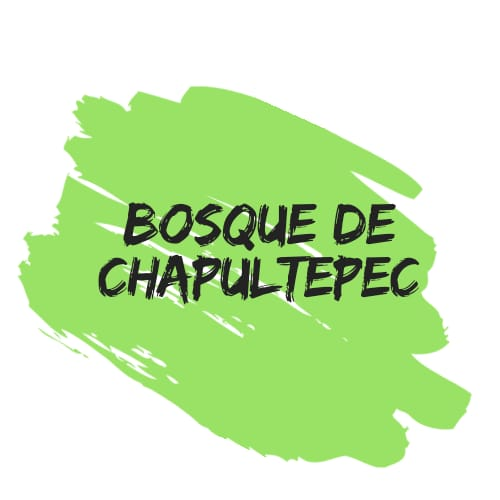
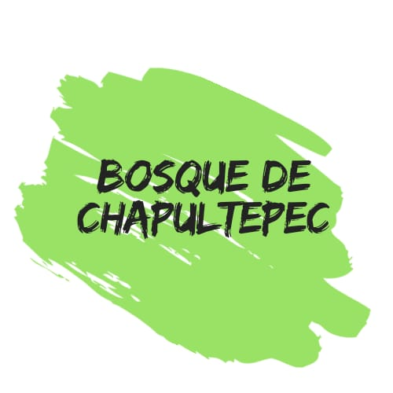
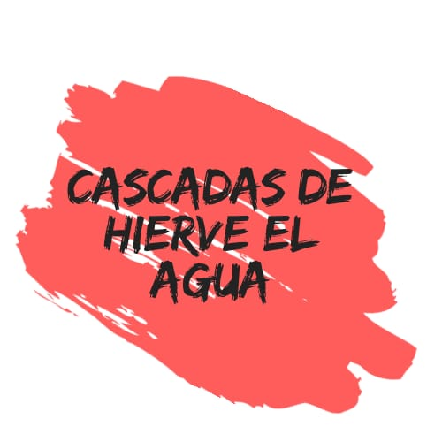
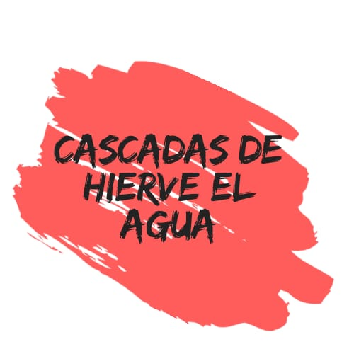

 



Orígenes de su nombre (náhuatl: Teōtihuácān, «Lugar donde fueron hechos los dioses; ciudad de los dioses») es el nombre que se da a la que fue una de las mayores ciudades de Mesoamérica durante la época prehispánica. El topónimo es de origen náhuatl y fue empleado por los mexicas, pero se desconoce el nombre que le daban sus habitantes. Importancia La Ciudad Prehispánica de Teotihuacan fue uno de los centros urbanos más grandes del mundo antiguo, que llegó a concentrar una población mayor a los 100,000 habitantes en su momento de máximo esplendor. Situada en un valle rico en recursos naturales, Teotihuacan fue la sede del poder de una de las sociedades mesoamericanas más influyentes en los ámbitos político, económico, comercial, religioso y cultural, cuyos rasgos marcaron permanentemente a los pueblos del altiplano mexicano, traspasando el tiempo y llegando hasta nosotros con la misma fuerza y grandeza con que sus constructores la planearon. La evidencia arqueológica descubierta en el Valle de Teotihuacan revela que durante el período Clásico se desarrolló una de las sociedades urbanas más complejas de toda Mesoamérica, así como que dicha sociedad estuvo altamente estratificada, ampliamente especializada y conformada por diversos grupos étnicos. Elementos distintivos del desarrollo cultural de la sociedad teotihuacana durante el Clásico, han sido identificados en lugares diversos del resto de Mesoamérica, incluyendo otros importantes sitios urbanos como Monte Albán, Cerro de las Mesas, Matacapan, Tikal y Kaminaljuyú.